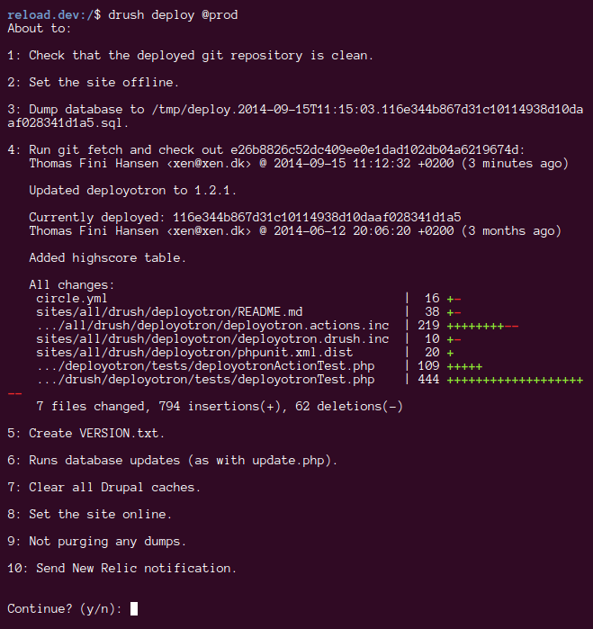

Get it out there
Deployotron expects your site to be committed to the root of your Git repository.
Copy deployotron into sites/all/drush
and commit it. This ensures that everyone is using the
same version when deploying.
Aliases makes Drush much more fun to use, and
committing an aliases.drushrc.php
in sites/all/drush makes it easy to share
them with the rest of the team. It's also the place to
configure deployotron.
Clone the site repository where you want to deploy it to, using the same user as setup for the alias, to ensure that the permissions of the files are properly set up.
Running the deploy command will ask you to confirm its actions, before doing it.
